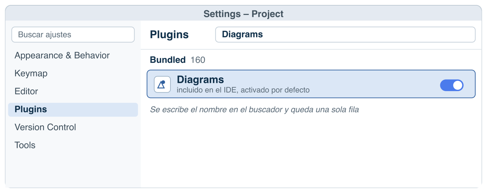
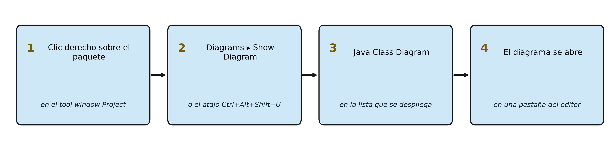
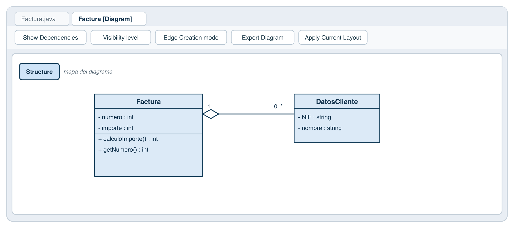
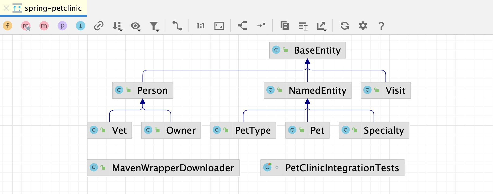
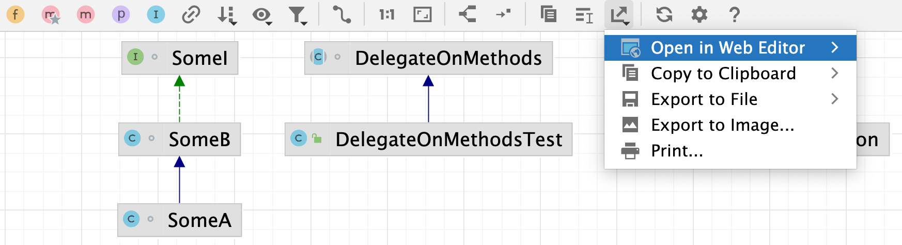

Diagramas de clases en IntelliJ IDEA
Ya sabemos leer un diagrama de clases y escribir con sus símbolos, pero todavía no hemos visto de dónde sale uno. Empezamos por la vía que da el propio entorno de desarrollo, porque es la que se tiene siempre a mano: IntelliJ IDEA, el IDE con el que ya hemos trabajado en el apartado de entornos, es capaz de generar el diagrama de clases a partir del código de un proyecto y de mantenerlo al día cuando ese código cambia. Lo que hace el entorno no es dibujar: lee el proyecto que ya tiene analizado y vuelca ese conocimiento sobre un lienzo.
Eso define el uso que se hace del diagrama. Un diagrama generado por el IDE sirve para entender lo que ya está programado y para comprobar que el modelo sigue siendo cierto; no sirve para anticipar un diseño que todavía no existe, porque no hay nada que leer. Las dos cosas son necesarias en un proyecto real, y por eso conviene saber hacer las dos.
El módulo Diagrams
La funcionalidad de diagramas no vive en el editor de código, sino en un módulo del IDE llamado Diagrams. Comprobar que está operativo es el primer paso del procedimiento, y la documentación oficial del producto insiste en un detalle que ahorra muchos problemas: el módulo viene incluido en la instalación y activado por defecto, así que lo normal es encontrarlo ya listo y lo que hay que hacer es verificarlo, no descubrirlo. Ctrl+Alt+S abre la ventana de Settings, dentro se selecciona Plugins y en el campo de búsqueda de la parte superior se escribe Diagrams; el módulo debe aparecer con su interruptor activado. Si las funciones relacionadas no aparecen después en ningún menú, la propia documentación apunta a esa misma comprobación: que el complemento no se haya desactivado por el camino.

El esquema anterior reproduce esa página de ajustes con la lista ya filtrada. Arriba está el campo de búsqueda, que es la vía rápida para no recorrer el catálogo entero, y debajo la lista se organiza en secciones: Bundled, con los complementos que vienen con el IDE, Installed, con los que se han descargado del Marketplace, y Suggested, con los que el entorno recomienda a partir de las bibliotecas que encuentra en el proyecto. El módulo Diagrams pertenece a la primera, así que al escribir su nombre en el buscador la lista se reduce a una sola fila, y lo que se comprueba es que el interruptor de la derecha esté encendido.
Conviene entender qué significa activar un módulo, más allá del trámite. El IDE es un programa que va cargando piezas según lo que necesita, y esas piezas comparten el mismo modelo interno del proyecto. Por eso un complemento puede añadir un menú nuevo sin que haya que tocar el código ni la configuración: el módulo se engancha a la estructura que el IDE ya tiene indexada. De ahí que si la pieza responsable de los diagramas no está activa, el IDE se comporte como si la funcionalidad no existiera, sin ningún mensaje de error y sin ninguna pista de por qué falta el menú.
Queda un asunto que no es técnico pero condiciona el aula. Desde la distribución unificada que JetBrains introdujo en la versión 2025.2 hay un solo instalador en lugar de dos ediciones separadas, y la versión sin suscripción es completamente funcional, también para proyectos comerciales. Las herramientas de diagramas, en cambio, siguen figurando, según la información de JetBrains sobre ese cambio, entre las funciones reservadas a la suscripción, de modo que el módulo puede aparecer en la lista sin ofrecer los diagramas de Java. Para desbloquearlo hay dos vías gratuitas:
- La licencia educativa, dirigida a estudiantes y a profesorado, que se solicita en la web de JetBrains acreditando la condición de alumno o de docente con el correo del centro. Es la vía oficial para un aula y la que conviene usar.
- La licencia de uso no comercial, que desbloquea las mismas funciones y tiene como única contrapartida la aceptación del envío de estadísticas de uso anónimas.
En los dos casos el resultado es el mismo módulo, el mismo menú y el mismo diagrama. Lo único que hay que tener claro es que el módulo no es software libre: es código propiedad de JetBrains, incluido en una aplicación que se distribuye con licencia propia. Si eso supone un problema, la sección final de esta página describe una alternativa que no depende de ninguna licencia.
Generar el diagrama desde el código
Con el módulo en marcha, el procedimiento es corto. En el tool window Project se pulsa con el botón derecho sobre el paquete del que se quiere el diagrama y se escoge Diagrams | Show Diagram, cuyo atajo es Ctrl+Alt+Shift+U. En la lista que aparece se selecciona Java Class Diagram, y el diagrama se abre en una pestaña nueva del editor. Si el proyecto está escrito en Kotlin, el mismo módulo genera el diagrama de clases de la misma manera. El menú ofrece además Diagrams | Show Diagram Popup, que dibuja lo mismo en una ventana emergente en lugar de una pestaña, y viene bien cuando se quiere consultar el diagrama sin perder de vista el código que se está editando.

El esquema anterior resume la ruta completa, con los nombres exactos que aparecen en pantalla. Se pulsa siempre sobre un paquete y no sobre una clase suelta, porque lo que el IDE dibuja es el contenido del paquete; si lo que se quiere es el diagrama de una sola clase, lo más rápido suele ser generar el del paquete y quedarse con la parte que interesa.
En ese instante el IDE dibuja un diagrama de clases completo del paquete, con sus relaciones y sus dependencias. Merece la pena detenerse en cómo se ha obtenido, porque es la diferencia esencial con respecto a una herramienta de dibujo: aquí nadie ha dibujado nada. El entorno ya tenía analizado el proyecto para ofrecer autocompletado y navegación, y el módulo de diagramas se limita a volcar ese mismo conocimiento sobre un lienzo. El resultado no es una interpretación del código, sino el código mismo visto desde otra perspectiva, y por eso refleja siempre la estructura real de clases y de métodos, incluidas las erratas del programador.
Ese mecanismo es exactamente la ingeniería inversa, con la diferencia de que aquí no hay que exportar nada: el diagrama se obtiene del proyecto que está abierto en ese momento.
Si falta alguna clase en el diagrama, se puede añadir sin volver a generarlo. Con el editor del diagrama en primer plano se pulsa Espacio, se empieza a escribir el nombre de la clase y se escoge de la lista de sugerencias; si la clase está fuera del proyecto, hay que marcar antes la casilla Include non-project items. La otra vía es seleccionar los elementos en el tool window Project y arrastrarlos hasta el diagrama.
Existe, además, una variante muy útil cuando el proyecto está bajo control de versiones. La opción VCS | Uncommitted Changes | Show Local Changes as UML, con atajo Ctrl+Alt+Shift+D, dibuja un diagrama con las clases que todavía no se han confirmado. En lugar de revisar un listado de archivos modificados, se revisa la forma que ha tomado el cambio, que es mucho más informativo cuando se trabaja en equipo.
Leer y configurar el diagrama
Un diagrama de un paquete real suele ser grande, y el editor incorpora herramientas para podarlo. La barra superior del editor de diagramas reúne los botones que más se usan. Show Dependencies dibuja las relaciones entre las clases siguiendo las convenciones de UML, de modo que una flecha con punta triangular indica herencia y una línea discontinua indica dependencia. El botón de visibilidad, el del icono con forma de ojo, despliega una lista de niveles: si se elige protected, aparecen los miembros con visibilidad igual o mayor que esa, cada uno con su icono de acceso correspondiente, y lo mismo ocurre con los botones que encienden o apagan por separado los campos, los métodos, los constructores, las propiedades y las clases internas.

El esquema anterior muestra esas piezas con sus rótulos, que es la forma más rápida de aprender qué hace cada botón. En la pantalla real, en cambio, la barra solo muestra iconos, y esa diferencia desorienta la primera vez. La captura siguiente, tomada de la documentación oficial, enseña cómo se ve el editor con un proyecto de verdad:

La imagen corresponde al proyecto de ejemplo spring-petclinic y contiene lo esencial del trabajo con diagramas generados. Cada rectángulo es una clase, con su nombre y el icono que indica qué tipo de elemento es; las líneas azules con punta triangular son relaciones de herencia, y la disposición la ha calculado el IDE, no el usuario. Merece la pena fijarse en que el diagrama no muestra miembros: con la visibilidad configurada por defecto solo aparecen los nodos, y son los botones de la barra los que deciden qué se despliega dentro de cada caja. Esa es la razón de que dos capturas del mismo proyecto puedan parecer diagramas distintos.
Junto a esos botones, la barra incluye un selector de scope que oculta lo que queda fuera del ámbito elegido (el proyecto, por ejemplo) y los controles de zoom y de ajuste del contenido a la ventana. Las multiplicidades no están en la barra: se encienden con Show Edge Labels, que vive en el menú contextual del lienzo, dentro del grupo Appearance. La leyenda de relaciones sigue la convención de UML y añade dos colores propios: la flecha azul corresponde a la cláusula extends y la verde a implements. Otras dos ayudas ahorran mucho tiempo en diagramas grandes. Al pulsar Ctrl+F12 se despliega la lista de elementos del diagrama, lo que permite saltar de uno a otro sin buscarlos con la vista. Y al ir pinchando en las clases, el IDE atenúa en gris las que no pertenecen al paquete que se está explorando, de forma que el foco visual se mantiene donde interesa. En el panel izquierdo, el botón Structure abre una ventana con un mapa completo del diagrama y una vista previa del bloque seleccionado, con opciones para ampliar, desplazar y cambiar la disposición, además de exportar una parte del dibujo como imagen.
Cuando el diagrama es inmanejable, el grupo de acciones Analyze Graph del menú contextual ofrece la salida. Focus on Node Neighborhood deja a la vista solo el nodo seleccionado y sus vecinos, y Focus On Paths Between Two Nodes muestra únicamente los caminos que conectan dos clases concretas, que es la forma más rápida de responder a la pregunta de cómo llega un objeto a otro; en el diálogo se afinan las opciones y se confirma con Find. Measure Centrality va un paso más allá y calcula un valor entre 0.0 y 1.0 para cada nodo según su importancia en la red de dependencias, de modo que los nodos más brillantes señalan las clases de las que cuelga el resto del sistema. Ese dato es oro al planificar una refactorización, porque identifica exactamente las piezas que no se pueden tocar sin arrastrar medio proyecto. En el mismo grupo aparecen la búsqueda de ciclos y la clusterización automática, que agrupan el dibujo por áreas cuando el número de nodos desborda la pantalla. Un Ctrl+Z deshace cualquiera de estas vistas sin tocar el código.
Queda por mencionar la configuración por defecto. En Ctrl+Alt+S y luego Tools | Diagrams se decide qué elementos aparecen y cómo se disponen cada vez que se genera un diagrama. El panel Content permite marcar los miembros de las clases (campos, constructores, métodos, propiedades y clases internas) y las dependencias, y el apartado Controls fija la disposición inicial, el ámbito por defecto, el ajuste del contenido tras aplicar una disposición y el recálculo automático cuando se añaden elementos nuevos. Ajustarlo una vez ahorra repetir el mismo trabajo en cada sesión.
Del diagrama al código
El editor de diagramas de IntelliJ no es un visor, sino un editor del modelo, y permite también trabajar en el sentido contrario: crear estructura de código desde el dibujo. Es la forma de cubrir la generación de código a partir de un diagrama sin salir del IDE, aunque su alcance sea incremental: no genera un proyecto entero de una vez, sino que va escribiendo en el código cada elemento que se añade al diagrama.
Con el botón derecho sobre el lienzo, la opción Content | New, cuyo atajo es Alt+Insert, abre un submenú para crear un elemento nuevo (una clase, un método, un campo) y, tras pedir los datos necesarios, lo añade a la vez al diagrama y al árbol del proyecto.
El caso más interesante es el botón Edge Creation mode de la barra del diagrama. Mientras no se activa, el editor no permite trazar enlaces; una vez activo, al dibujar una relación entre dos clases el IDE modifica el código fuente en consecuencia, de modo que una herencia se convierte en la cláusula extends correspondiente y una implementación en su implements. Eso significa que se puede trabajar sobre el dibujo y ver cómo el programa cambia debajo, que es la forma más directa de entender qué significa cada símbolo del diagrama de clases. En el sentido opuesto, al borrar un enlace o un nodo del diagrama el IDE actualiza también el código, y conviene hacerlo con Safe Delete (Alt+Delete) para que compruebe antes si el elemento se usa en alguna parte. Las acciones Show Implementations (Ctrl+Alt+B) y Show Parents (Ctrl+Alt+P) permiten saltar de un elemento a sus implementaciones o a sus clases madre, y Find Usages (Alt+F7) responde a la pregunta de quién llama a ese método. Para moverse por paquetes sin perder el hilo, C contrae un nodo y muestra el paquete que lo contiene, y E lo expande con el diagrama completo de ese paquete.
Esa bidireccionalidad tiene una consecuencia importante. En una herramienta de dibujo como la que veremos en la página siguiente, el modelo y el código son dos artefactos separados que hay que mantener sincronizados a mano, y por eso hay que regenerar y revisar diferencias cada vez que uno de los dos cambia. En IntelliJ solo existe el código: el diagrama es una vista de él, así que no pueden divergir. La contrapartida es que tampoco sirve para diseñar algo que todavía no existe, porque no hay nada que leer.
Exportar el diagrama
Un diagrama que solo existe dentro del IDE no se puede entregar, así que el último paso de cualquier sesión de trabajo es sacarlo de ahí. Se pulsa con el botón derecho sobre el editor del diagrama y se escoge Export Diagram | Export to File, eligiendo a continuación la extensión del archivo. El mismo comando está en el botón Export Diagram de la barra, que abre un menú con cinco salidas: Open in Web Editor para seguir editando el dibujo en una herramienta externa, Copy to Clipboard para pegarlo en otro documento eligiendo el formato, Export to File para guardarlo con una extensión concreta, Export to Image… para obtener un PNG sin pasar por el diálogo y Print… para mandarlo a la impresora.

La captura anterior, tomada de la documentación oficial, muestra ese menú desplegado sobre el lienzo. Merece la pena fijarse en el submenú por el que se entra: cada una de esas entradas abre a su vez la lista de formatos disponibles, de modo que la decisión del formato no se toma antes de exportar, sino en el momento de elegirlo.
La elección del formato no es indiferente y conviene decidirla según el destino, porque el editor no solo guarda imágenes. SVG guarda el diagrama como gráfico vectorial, de modo que se puede ampliar sin que se pixele y sigue viéndose nítido al imprimirlo en papel o al proyectarlo en clase; es la opción recomendada cuando el diagrama va a acabar dentro de una memoria técnica. PNG, que es lo que produce Export to Image…, genera un mapa de bits: más cómodo de pegar en un procesador de textos o en una presentación, pero con una resolución fija, de modo que si se amplía se ve borroso. Y junto a los dos formatos de imagen, el diálogo ofrece varios formatos de texto pensados para herramientas de terceros: Mermaid, PlantUML, Graphviz y GraphML, este último para editarlo después con yEd. El formato .uml que aparece en esa misma lista es interno de JetBrains y solo se puede abrir dentro del proyecto en el que se creó, así que no sirve para compartir.
Esa última familia merece un comentario, porque enlaza con lo que ya sabemos de Git. Un diagrama exportado como imagen es un fichero opaco: el repositorio lo guarda, pero no puede mostrar qué ha cambiado entre dos versiones. Un diagrama exportado como Mermaid o como PlantUML es texto plano, y una revisión puede compararlo línea a línea, de manera que una modificación en la relación entre dos clases aparece como una línea eliminada y otra añadida. Para un proyecto que va a evolucionar durante años, esa diferencia pesa más de lo que parece.
Antes de exportar merece la pena dedicar un minuto a dejar el diagrama legible, porque la imagen no va a llevar ninguna explicación al lado. Conviene comprobar que la visibilidad de los miembros está en el nivel adecuado, porque mostrar todos los métodos privados de veinte clases convierte el diagrama en una lista ilegible; que los nodos están repartidos de forma que las líneas no se crucen sin necesidad; y que se han usado las herramientas de filtrado del apartado anterior para quedarse solo con la parte del modelo que se quiere enseñar. Un diagrama exportado sin ese repaso suele ser correcto y, a la vez, inservible.
La alternativa sin licencia: PlantUML Integration
Cuando no se quiere depender de ninguna licencia, el hueco se cubre con PlantUML Integration, un complemento del Marketplace que se distribuye con licencia Apache 2.0, es decir, software libre, y que funciona sin ninguna suscripción. Su mecanismo es distinto al del módulo de JetBrains: en lugar de generar el diagrama leyendo el proyecto, interpreta un archivo de texto escrito en el lenguaje PlantUML y lo dibuja en un panel de previsualización junto al editor.
Ese cambio de mecanismo tiene una consecuencia importante para nosotros, y es que cubre todos los diagramas del bloque de modelado: clases, objetos, secuencias, casos de uso, actividades y estados. Instalarlo una vez sirve para este apartado y también para el de comportamiento, lo que lo convierte en la opción más rentable cuando el objetivo es que ningún alumno se quede fuera por una licencia.
El procedimiento es el habitual de cualquier complemento: Ctrl+Alt+S → Plugins → pestaña Marketplace → buscar PlantUML Integration → Install y reiniciar el entorno si lo pide. Después basta con crear un archivo con extensión .puml, escribir el diagrama entre las etiquetas @startuml y @enduml, y verlo dibujado al lado del código. Hay un requisito que conviene conocer de antemano porque es la causa del error más habitual: muchos tipos de diagrama necesitan el programa Graphviz instalado en el sistema, que es libre y se instala con un comando en Linux y macOS.
La ventaja de este enfoque, además de la licencia, es la que ya nos encontramos en el apartado de control de versiones: un archivo .puml es texto plano, de modo que Git puede compararlo línea a línea y una modificación en la relación entre dos clases aparece como una línea eliminada y otra añadida. Un diagrama guardado como imagen no permite eso.
Merece la pena, por tanto, hacer una distinción que ayuda a elegir: el módulo de JetBrains dibuja lo que el código ya dice, y PlantUML dibuja lo que nosotros escribimos. El primero es una vista del proyecto y no puede contradecirlo; el segundo es un documento y puede quedarse desactualizado, pero también puede describir un diseño que todavía no existe. Las dos herramientas se llevan bien, y de hecho el propio IDE tiende el puente entre ambas: un diagrama generado desde el código se puede exportar a PlantUML o a Mermaid y guardar como texto en el repositorio, con lo que se conserva una foto del modelo que sí se puede revisar en un pull request.
El proceso en vídeo
El recorrido que hemos ido explicando por partes cabe entero en menos de dos minutos de grabación, y verlo de una vez ayuda a fijar el orden: primero se genera el diagrama del paquete, después se ajusta lo que se quiere enseñar y al final se exporta. El vídeo siguiente hace exactamente esa secuencia sobre un proyecto pequeño. Está narrado en inglés, pero las acciones se siguen sin dificultad porque todo ocurre en los menús y los diálogos que ya conocemos:
El otro sentido del trabajo
Con esto queda recorrido el camino que va del código al diagrama. Queda el inverso, el del diseño: decidir qué clases habrá, cómo se llamarán y cómo se relacionarán antes de que exista el programa, y obtener después el esqueleto del código a partir del modelo. Para ese camino hace falta una herramienta donde dibujar sea cómodo y donde el diagrama sea un documento en sí mismo, y es lo que se trabaja en la página siguiente.
Lo que no funciona es quedarse con una sola de las dos vías. Un diagrama que solo existe en un archivo aparte se queda obsoleto en cuanto el código avanza, y un diagrama generado por el IDE no puede anticipar un diseño que todavía no se ha escrito.